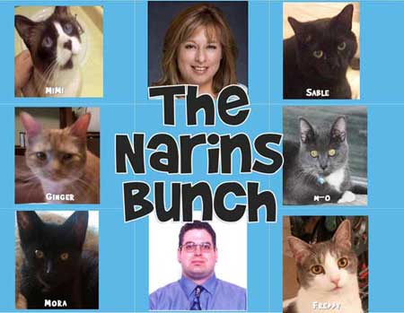

Sable
A 14-year-old Bombay, Sable is always hungry; just ask him, and he’ll tell you. The only thing he loves
more than food is his pillow. Rescued after having been turned out by his former owners, he loves to
perch on your chest and receive adoring attention, even as you try to sleep.
MiMi
Rescued in Utah from a solitary life in a nail salon, MiMi is an 8-year-old Snowshoe variant of the wellknown and vocal Siamese breed. Her markings are as distinctive as her cry, which she uses whenever
she demands your attention. The bathroom counter is her preferred location for attention, and she will
contort herself to get scratches at just the right angle under her pink collar. She is definitely the Diva of
the household.
m-o
Rescued after a fall from a tree as a kitten that fractured his femur, M-o (a 3-year-old Prussian Blue,
named after the stubborn robot in WALL-E) is determined, adventuresome and fearless. Fully recovered,
he likes to misbehave and will encourage the other cats to join him in his misdeeds as the “God-Kitten”
of our own “Kitty Mafia” of younger cats, of whom he is fiercely protective. Nicknamed “Monkey” for his
predilection for scaling any available structure, including doors, drapes and the chandelier, gravity is not
a law for him, only a suggestion.
Freddy
A 2-year-old grey and white American Shorthair, Freddy was rescued from an abandoned farm during
the oppressive heat wave of summer’s past, along with his golden-furred sister, Ginger. With a very
sweet disposition, Freddy loves to be held and will purr loudly enough to rival any lawnmower when
he’s content.
Ginger
Freddy’s golden-furred sister, she is a cautious but sweet girl, who demands little attention but loves
to play with feathers and toys. She gravitates towards the other cats, especially M-o, and is perfectly
comfortable snoozing in any available sunbeam. Our most stealthy cat, she rarely meows and can
seemingly disappear without effort, only to reappear hours later to rub against your leg at feedingtimes.
Mora
The youngest and cutest of them all, Mora is a 1-year-old Bombay who was rescued last year from
a mailbox during the summer heat by another cat aficionado. Affectionate, active, and curious, she
tries to copy everything her new “older brothers” do. She loves being held and will happily follow us
everywhere, even to bed where she will snuggle contentedly against a hip or leg for hours.